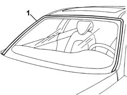
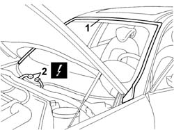
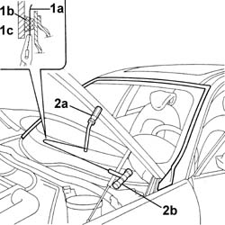
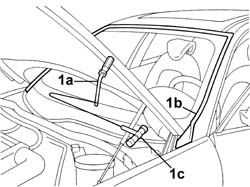
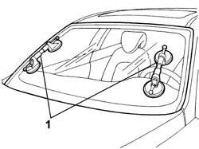
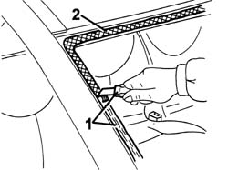
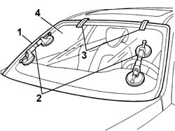
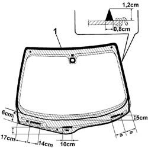
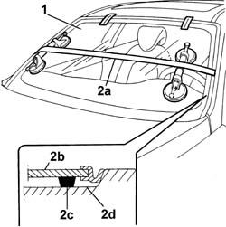

7035A18 Rearscreen WINDOW GLASS (bonded type) - R.R. for Replacement - Includes cleaning housing in bodyshell
- Path
- Procedures > 70 FITTINGS > 7035 BODY WINDOW GLASSES > 7035A WINDSCREEN > 7035A18 Rearscreen WINDOW GLASS (bonded type) - R.R. for Replacement - Includes cleaning housing in bodyshell
- Kind
- repair procedure (removal / refitting; the operation number is the code)
- Applies to
- all engines; all production periods
- Interactive page
- https://sloeber94.github.io/elrnDB-lThss/en/#/80325
Applies to: all engines; all production periods
 Removing
Removing
 Refitting
Refitting- Disconnect the negative battery terminal.
See in Op. 5050B34 WINDSCREEN WIPER ARM(S) for front windscreen wiper complete with blade
-
See in Op. 7055A18 Winsdcreen base TRIM - R.R.
See in Op. 7040H30 FRONT PILLAR TRIM (one), left or right - R.R.
See in Op. 7065C30 interior l/h or r/h grab handle (one) - r+r
See in Op. 7040E50 Front MODULAR COURTESY LIGHT UNIT - R.R.
See in Op. 7030B64 Sun roof control SWITCH - R.R.
See in Op. 7065C30 interior l/h or r/h grab handle (one) - r+r
See in Op. 7065C68 INTERIOR REAR VIEW MIRROR - R.R.
See in Op. 5050B64 rain sensor electronic unit r r
1. Release the windscreen perimeter seal.

Applies to: all engines; all production periods
1. Apply adhesive tape to the edges to protect the bodywork.
2. Disconnect the electrical connection.
 | Description | Connector |
|---|---|---|
2 | Heated windscreen | P056 |

Applies to: all engines; all production periods
- Keep the roof lining a suitable distance away from the windscreen.
1. Cut a length of wire of about 50 cm then, with the help of pliers, introduce one end (1a) of the wire through the bead of sealant (1b) securing the windscreen (1c).
2. Secure one of the wire to the special retaining tool (2a), located inside the vehicle and the other end to the traction handle (2b) located outside the vehicle.

Applies to: all engines; all production periods
1. The mechanic inside the vehicle should keep the end of the tool (1a) on the bead of sealant (1b) about 30 cm away from the point where the wire passes through, whilst the other mechanic, who is outside the vehicle, should pull the handle (1c), following the surround of the windscreen glass.

Applies to: all engines; all production periods
- Repeat the operation in sections of about 30 cm until the bead of sealant is completely cut.
1. After having cut the bead of sealant, apply suction pads to the windscreen and then, with the assistance of a second mechanic, remove the windscreen and rest it on a suitable support.

Applies to: all engines; all production periods
Refitting
Removing1. Using suitable equipment, cut and level the bead of sealant in the windscreen housing leaving a thickness of between 0.25 and 1 mm, taking care not to scratch the paintwork.
2. Thoroughly clean the windscreen housing using an air jet and degrease fully using heptane.
- When bonding, 60 minutes after the bead of sealant has been cut and levelled, the surface of the actual sealant must be treated using the special activating product and it is necessary to wait for 15 minutes before fitting the windscreen.
 | Description | Qty. | Component | Type | Classification |
|---|---|---|---|---|---|
. | PRIMER | - | WINDSCREEN GLASS SEALING STRIP | - | - |
- If necessary, retouch the paintwork.

Applies to: all engines; all production periods
- If this is not the case, use a new window glass and follow the instructions below.
1. Remove the adhesive tape from the edges of the bodywork and along the side and upper perimeters of the windscreen housing.
2. Carry out a test fitting and centre the windscreen perfectly.
3. When the windscreen has been centered, mark the position of the windscreen in relation to the housing using strips of adhesive tape.
4. Cut the strips of adhesive tape and remove the windscreen.
See in Op. 7035A50 WINDSCREEN GLASS - Clean edges and sand small abrasions
- If the same glass is going to be reused

Applies to: all engines; all production periods
1. Using a spray gun, apply a bead of sealant to the entire perimeter of the windscreen following the instructions in the diagram.
| Description | Qty. | Component | Type | Classification |
|---|---|---|---|---|---|
. | Product n° 71711976 | - | WINDSCREEN GLASS SEALING STRIP | - | - |

Applies to: all engines; all production periods
1. Place the windscreen in the housing, with the assistance of a second mechanic, straight after applying the sealant and let it bed in.
2. Position the belt (2a), as illustrated, and tension it so that even pressure is exerted on the entire windscreen to ensure that the matching between the glass (2b), sealant (2c) and windscreen housing (2d) is correct.

Applies to: all engines; all production periods
See in Op. 5050B64 rain sensor electronic unit r r
See in Op. 7065C68 INTERIOR REAR VIEW MIRROR - R.R.
See in Op. 7065C30 interior l/h or r/h grab handle (one) - r+r
See in Op. 7030B64 Sun roof control SWITCH - R.R.
See in Op. 7040E50 Front MODULAR COURTESY LIGHT UNIT - R.R.
See in Op. 7065C30 interior l/h or r/h grab handle (one) - r+r
See in Op. 7040H30 FRONT PILLAR TRIM (one), left or right - R.R.
See in Op. 7055A18 Winsdcreen base TRIM - R.R.
See in Op. 5050B34 WINDSCREEN WIPER ARM(S) for front windscreen wiper complete with blade
-
- Connect the negative battery terminal.
Topics linked from this page (9)
- 5050B34 WINDSCREEN WIPER ARM(S) for front windscreen wiper complete with blade
- 5050B64 rain sensor electronic unit r r
- 7030B64 Sun roof control SWITCH - R.R.
- 7035A50 WINDSCREEN GLASS - Clean edges and sand small abrasions
- 7040E50 Front MODULAR COURTESY LIGHT UNIT - R.R.
- 7040H30 FRONT PILLAR TRIM (one), left or right - R.R.
- 7055A18 Winsdcreen base TRIM - R.R.
- 7065C30 interior l/h or r/h grab handle (one) - r+r
- 7065C68 INTERIOR REAR VIEW MIRROR - R.R.